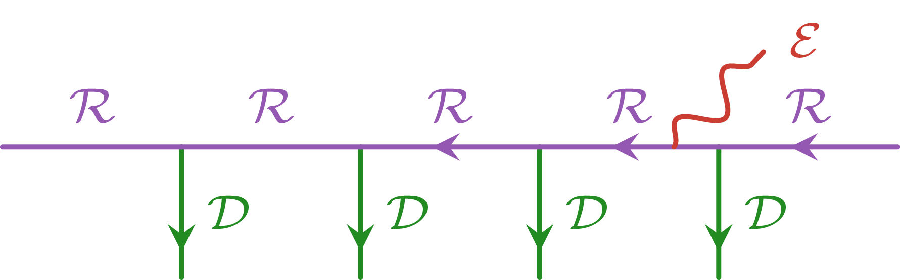

MultiTensorKit as an extension to TensorKit
This section will explain the internal changes to TensorKit which are required to extend the compatibility with fusion categories to multifusion ones. Users who are unfamiliar with TensorKit are kindly guided towards the TensorKit tutorial.
As a Sector
MultiTensorKit is at its core an extension to TensorKitSectors, as it simply provides a new Sector, i.e. simple objects of a multifusion category, named BimoduleSector.
struct BimoduleSector{Name} <: Sector
i::Int
j::Int
label::Int
endi and j specify which subcategory $\mathcal{C}_{ij}$ we are considering, and label selects a particular simple object within that subcategory. Name selects which multifusion category to work with, and is a Symbol. As of now, only :A4 is available, referring to the multifusion category consisting of $\mathsf{Rep(A_4)}$ as the largest fusion category, and all its Morita dual fusion categories and corresponding bimodule categories. The fusion of these BimoduleSectors is then defined by the fusion rules of the multifusion category. In particular,
a = BimoduleSector{:A4}(i, j, label1)
b = BimoduleSector{:A4}(k, l, label2)
a ⊗ b # empty unless j == kThe fusion rules are read in via the artifact labeled "fusiondata", and are extracted at runtime when calling the fusion of two BimoduleSectors (or Nsymbol) for the first time. These data are cached in a hash table for later use.
A consequence of the multifusion structure is the colorings used in the graphical calculus of fusions. A natural introduction is the notion of a left and right unit of some (simple) object in the multifusion category. These are called with the functions TensorKitSectors.leftunit and TensorKitSectors.rightunit. Clearly, for the usual case of just one fusion category, these both coincide with the unique unit object. For this reason, the TensorKitSectors.UnitStyle trait is introduced to differentiate between fusion categories and multifusion categories, returning SimpleUnit() and GenericUnit(), respectively. This trait is used to specialise certain functions within TensorKit (see below). TensorKitSectors.allunits is also introduced to return all the simple unit objects of the (multi)fusion category. This function must be defined for every multifusion category to be compatible with TensorKit.
Via the fusion rules, the left and right units of all BimoduleSectors along with their duals are also extracted and cached. The fusion behavior that must be imposed for the entire BimoduleSector is the most general one that appears in the fusion between any two BimoduleSectors. In particular, if one of the diagonal fusion categories has fusion rules with multiplicities, then the entire BimoduleSector must be set to have TensorKitSectors.FusionStyle(::Type{<:BimoduleSector}) = GenericFusion(). This is the case for the $A_4$ BimoduleSector, since $\mathsf{Rep(A_4)}$ is one of the diagonal fusion categories and has fusion rules with multiplicities.
Going beyond the ring structure, the F-symbols are also read in from the artifact, and are stored in a hash table for later use. The F-symbols are then used to perform F-moves on BimoduleSectors, which is required to perform recouplings of fusion trees when doing e.g. contractions of tensors with these categories grading the vector spaces.
Due to the nature of the multifusion category, it is currently not possible to define a non-trivial braiding on the BimoduleSectors, so these are set to be non-braided: TensorKitSectors.BraidingStyle(::Type{<:BimoduleSector}) = NoBraiding(). This is especially important when working with matrix product states, as all algorithms are required to remain planar, since no (half-)braiding is available to perform crossings of fusion trees.
As a symmetry in TensorKit
Since BimoduleSectors are Sectors, they can be used as symmetries in TensorKit. This way, we can construct symmetric tensors with the symmetries of the multifusion category, which are more general than those of the fusion categories. In particular, the vector spaces graded by these BimoduleSectors are not only graded by the simple objects of the fusion categories, but also by the simple objects of the bimodule categories. This allows for more general tensor network simulations of quantum many-body systems with symmetries which go beyond those of fusion categories.
Certain changes within TensorKit were required to make it compatible with the multifusion categorical structure. In particular, the presence of a simple unit object for every fusion category on the diagonal of the multifusion category, along with the off-diagonal nature of the simple objects of the bimodule categories, required some internal changes to the way unit objects were treated in TensorKit. Most notably, the unit object is no longer unique, and thus it is of utmost importance that the correct one is considered when performing tensor contractions at the level of the fusion trees. This is achieved precisely through colorings and the use of leftunit and rightunit. For this reason, every fusion tree manipulation which previously involved "the" unit object, now involves the leftunit and rightunit of some neighboring sector in the manipulation to identify the correct color. An important example of this is explained in the previous section on Opposite module categories, namely the mapping of a splitting vertex to a fusion vertex via a B-move.
When manipulating spaces graded by BimoduleSectors, one needs to also be careful of which unit spaces can compose with other graded spaces on which side. This introduces the functions TensorKit.leftunitspace and TensorKit.rightunitspace, which check whether the coloring of the (in general) composite object grading the space is uniform, then return the one-dimensional space with the unique left/right unit object consistent with that coloring. Clearly, leftunitspace and rightunitspace coincide for fusion categories; this defaults to TensorKit.unitspace. For multifusion categories, the latter function returns the space with the semisimple unit object grading it. leftunitspace and rightunitspace are used with the functions TensorKit.insertleftunit and TensorKit.insertrightunit. There, based on the index where a unit space is wished to be inserted, a leftunitspace or rightunitspace is added such that the resulting space remains consistent with the fusion rules of the multifusion category. Similarly, TensorKit.removeunit is used to remove unit spaces, and will explicitly check whether the space contains only unit objects of any color with TensorKit.isunitspace.
MultiTensorKit compatibility with MPSKit
This section will briefly explain the changes within MPSKit which are required to make it compatible with MultiTensorKit. For a more practical explanation, users are kindly guided towards the Example section.
The main change within MPSKit is very similar to the fusion tree manipulations in TensorKit, namely the use of leftunit and rightunit to identify the correct unit object. In the case of MPSKit, trivial spaces are used everywhere, from the boundary of a finite matrix product state to the virtual spaces of a Hamiltonian written as an matrix product operator. Additionally, multiple tensor contractions made use of braiding tensors to perform crossings of legs of the MPSs/MPOs. Since no (half-)braiding is available for the BimoduleSectors, all algorithms had to be made planar, and thus all braiding tensors were removed. Since all braidings were trivial, this was dealt with by simply removing the braiding tensors and replacing the crossing of legs with a termination and reintroduction of the legs without crossing by aid of removeunit, insertleftunit and insertrightunit.
At the level of the MPS, the correct unit object can be identified through the use of leftunit(ψ::AbstractMPS) and rightunit(ψ::AbstractMPS). When the virtual space of the MPS is graded by a diagonal BimoduleSector, i.ea unitary fusion category, then these all coincide with the unique unit object of that fusion category. However, when the virtual space is graded by an off-diagonal BimoduleSector, i.e. a bimodule category, then the left and right units are different, and thus it is important to identify the correct one when performing MPS algorithms. For example, Hamiltonians should always have the same coloring as the right unit of the MPS, since they are contracted at the physical level of the MPS. Similarly, excitations of an MPS are labeled by BimoduleSectors with the same coloring as the left unit of the MPS, since the auxiliary charge leg of the excitation is attached on the other side of the MPS to the virtual level. This is illustrated in the following figure.

Here, $\mathcal{D}$ is the fusion category grading the physical space of the MPS, $\mathcal{R}$ is the right $\mathcal{D}$-module category grading the virtual space of the MPS. $\mathcal{E}$ is the Morita dual fusion category of $\mathcal{D}$ with respect to $\mathcal{R}$, which is the category labelling the excitations of the MPS. In this case, the left unit of the MPS is in $\mathcal{E}$, and the right unit in $\mathcal{D}$.